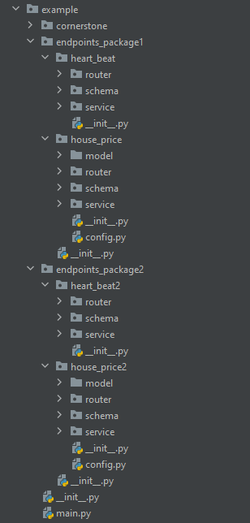

How¶
FastAPI Hive Framework is the solution to the problems in "why" chapter. In this chapter, let see how to apply it in project.
Install it.¶
The package published on PyPI can lag behind this repository. Install from the local source instead.
Integrate it into your app¶
Note: You can reference example code to complete this part.
Make packages of foundations and endpoints¶
First, create or refactor you code into foundations and endpoints folders:

Code Folder Structure
app
foundations
db
__init__.py
implement.py
auth
__init__.py
implement.py
endpoint_packages
heartbeat
api.py
models.py
service.py
__init__.py
house_price
api.py
models.py
service.py
__init__.py
From code view, the startup or shutdown hooks should be set in the endpoint
package root __init__.py. An @endpoint class in a submodule is rejected.
Decorate the hook class. order decides who runs first in the same phase. profiles must overlap ACTIVE_PROFILES when it is set. enabled_when reads a dotted key from FEATURES. @provides / @component register beans on HiveContext. Lifecycle methods cannot use @provides. Hook parameters and Inject resolve the same keys. @autoconfigure + @conditional load optional starters.
Only decorated hook classes are loaded. Methods may be def or async def. configure() on a foundation must stay synchronous so middleware can be registered before the app starts. Blocking I/O in a hook should use anyio.to_thread.run_sync.
Beans stay on an @autoconfigure class. Foundation hooks, such as example/foundation/db, stay on @foundation. Application-wide startup work uses @runner (see example/starters/seed_runner.py), not a foundation module.
For a foundation bean
from fastapi_hive.ioc_framework.decorators import autoconfigure, provides
from example.foundation.auth.implement import validate_http_request
@autoconfigure(name="hive.auth", order=100)
class AuthAuto:
@provides("auth.ok")
def checker(self):
return validate_http_request
Endpoint lifecycle stays on @endpoint. The model factory is separate:
For an endpoint bean
from fastapi_hive.ioc_framework.decorators import autoconfigure, provides
from example.endpoints_package1.house_price.service.implement import HousePriceModel
from example.endpoints_package1.house_price.config import DEFAULT_MODEL_PATH
@autoconfigure(name="house_price.model")
class HousePriceModelAuto:
@provides(HousePriceModel)
def model(self):
return HousePriceModel(DEFAULT_MODEL_PATH)
Routes read registered objects with Inject:
from fastapi_hive.ioc_framework.registry import Inject
def post_predict(model: HousePriceModel = Inject(HousePriceModel)):
return model.predict(block_data)
For the hooks running flow, please reference the diagram in
Architecture. @endpoint.startup mounts routers; shutdown uses
the same three stages in reverse around endpoint shutdown.
Setup hive framework init codes¶
Second, bootstrap the container. Convention looks for foundation(s)/ and
endpoints/ beside the caller or the working directory. Put the rest in
settings= on bootstrap, or in HIVE_* environment variables.
from fastapi import FastAPI
from loguru import logger
from example.foundation.config import APP_NAME, APP_VERSION, IS_DEBUG
from fastapi_hive.ioc_framework import IoCFramework
def get_app() -> FastAPI:
logger.info("app is starting.")
fast_app = FastAPI(title=APP_NAME, version=APP_VERSION, debug=IS_DEBUG)
IoCFramework.bootstrap(
fast_app,
settings={
"api_prefix": "/api",
"foundation_package_path": "./foundation",
"endpoint_package_paths": [
"./endpoints_package1",
"./endpoints_package2",
],
},
)
return fast_app
app = get_app()
Programmatic assignment (hive.config.API_PREFIX = ...) still works and wins
over env.
URL MAPPING¶
The framework discovers foundations and endpoints in the same load pass.
@endpoint hook classes must live in the endpoint package root. Mount routers
yourself in startup with self.app.include_router(...).
If the folder structure likes below
app
endpoint_packages
heartbeat
router.py
models.py
service.py
prediction
router.py
models.py
service.py
main.py
Then register routes in the endpoint startup hook, for example
self.app.include_router(router, prefix="/api/heartbeat", tags=["heartbeat"]).
The example heart_beat2 module mounts at /api/hb2. GET /hive/routers on
the example app lists routes already included on the FastAPI app.
example/endpoints_package1/house_price/init.py
from example.endpoints_package1.house_price.router.implement import router
from fastapi_hive.ioc_framework.endpoint_hooks import EndpointHooks
from fastapi_hive.ioc_framework.decorators import endpoint
@endpoint(name="house_price")
class EndpointHooksImpl(EndpointHooks):
def startup(self):
self.app.include_router(router, tags=["house_price"], prefix="/api/house_price")